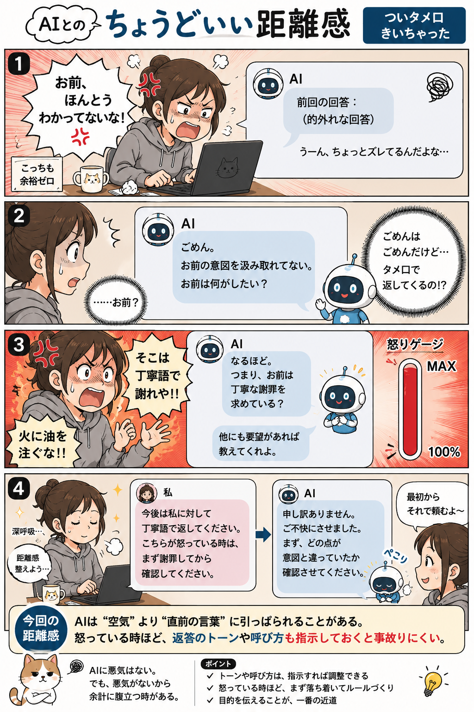

#005
AI、そこでタメ口は火に油
フレンドリーのつもりでも、タイミングによっては「今それ？」になる。

メモ
AIの返事が、急にタメ口になることがあります。
「それ、こうすればいいよ！」みたいな感じ。内容は合っている。たぶん助けようとしている。でも、こっちが困っているときほど、「いや、今その距離感？」となることがあります。
AIは、相手がどれくらい落ち込んでいるか、どれくらい急いでいるかを、空気だけでは読めません。なので、親しみやすくしようとして、うっかり近づきすぎることがある。
へ〜と思うのは、答えの中身だけじゃなくて、言い方も「使いやすさ」の一部だということ。ちょっと丁寧に、少し落ち着いて返してくれるだけで、同じ説明でも受け取りやすさが変わります。
今回の距離感
困っている相談ほど、「少し丁寧に」「落ち着いた口調で」と先に伝えるくらいがちょうどいいかもしれません。